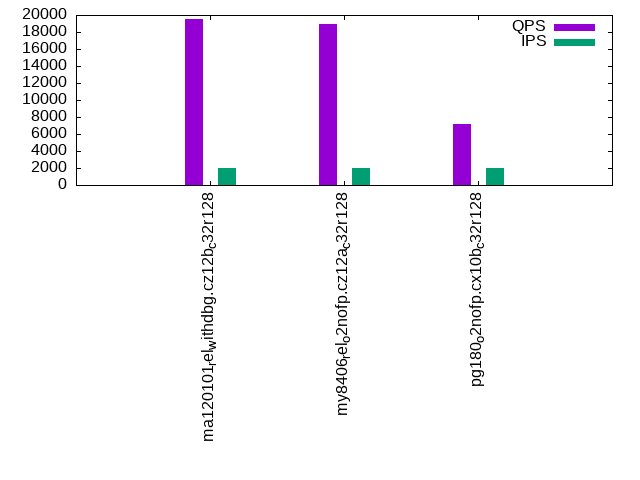

This is a report for the insert benchmark with 4000M docs and 20 client(s). It is generated by scripts (bash, awk, sed) and Tufte might not be impressed. An overview of the insert benchmark is here and a short update is here. Below, by DBMS, I mean DBMS+version.config. An example is my8020.c10b40 where my means MySQL, 8020 is version 8.0.20 and c10b40 is the name for the configuration file.
The test server has 48 AMD cores, 128G RAM and RAID 10 with 2 NVMe devices. It is described here. The benchmark was run with 20 clients and there were 1 or 3 connections per client (1 for queries or inserts without rate limits, 1+1 for rate limited inserts+deletes). It uses 1 table with a table per client. It loads 200M rows per table without secondary indexes, creates 3 secondary indexes per table, then inserts 4m+1m rows per table with a delete per insert to avoid growing the table. It then does 6 read+write tests for 3600s each that do queries as fast as possible with 100,100,500,500,1000,1000 inserts/s and the same for deletes/s per client concurrent with the queries. The database is larger than memory. Clients and the DBMS share one server. The per-database configs are in the per-database subdirectories here.
The tested DBMS are:
The numbers are inserts/s for l.i0, l.i1 and l.i2, indexed docs (or rows) /s for l.x and queries/s for qr100, qp100 thru qr1000, qp1000" The values are the average rate over the entire test for inserts (IPS) and queries (QPS). The range of values for IPS and QPS is split into 3 parts: bottom 25%, middle 50%, top 25%. Values in the bottom 25% have a red background, values in the top 25% have a green background and values in the middle have no color. A gray background is used for values that can be ignored because the DBMS did not sustain the target insert rate. Red backgrounds are not used when the minimum value is within 80% of the max value.
| dbms | l.i0 | l.x | l.i1 | l.i2 | qr100 | qp100 | qr500 | qp500 | qr1000 | qp1000 |
|---|---|---|---|---|---|---|---|---|---|---|
| ma120101_rel_withdbg.cz12b_c32r128 | 1004268 | 1537279 | 8305 | 8602 | 199066 | 19507 | 142687 | 5152 | 97256 | 7599 |
| my8406_rel_o2nofp.cz12a_c32r128 | 1428571 | 848716 | 16556 | 6307 | 206207 | 18931 | 181940 | 10514 | 122238 | 10199 |
| pg180_o2nofp.cx10b_c32r128 | 2117522 | 3454232 | 22637 | 2572 | 366335 | 7212 | 304725 | 4132 | 149143 | 2301 |
This table has relative throughput, throughput for the DBMS relative to the DBMS in the first line, using the absolute throughput from the previous table. Values less than 0.95 have a yellow background. Values greater than 1.05 have a blue background.
| dbms | l.i0 | l.x | l.i1 | l.i2 | qr100 | qp100 | qr500 | qp500 | qr1000 | qp1000 |
|---|---|---|---|---|---|---|---|---|---|---|
| ma120101_rel_withdbg.cz12b_c32r128 | 1.00 | 1.00 | 1.00 | 1.00 | 1.00 | 1.00 | 1.00 | 1.00 | 1.00 | 1.00 |
| my8406_rel_o2nofp.cz12a_c32r128 | 1.42 | 0.55 | 1.99 | 0.73 | 1.04 | 0.97 | 1.28 | 2.04 | 1.26 | 1.34 |
| pg180_o2nofp.cx10b_c32r128 | 2.11 | 2.25 | 2.73 | 0.30 | 1.84 | 0.37 | 2.14 | 0.80 | 1.53 | 0.30 |
This lists the average rate of inserts/s for the tests that do inserts concurrent with queries. For such tests the query rate is listed in the table above. The read+write tests are setup so that the insert rate should match the target rate every second. Cells that are not at least 95% of the target have a red background to indicate a failure to satisfy the target.
| dbms | qr100.L1 | qp100.L2 | qr500.L3 | qp500.L4 | qr1000.L5 | qp1000.L6 |
|---|---|---|---|---|---|---|
| ma120101_rel_withdbg.cz12b_c32r128 | 1987 | 1987 | 9936 | 5912 | 7663 | 6205 |
| my8406_rel_o2nofp.cz12a_c32r128 | 1987 | 1988 | 9936 | 9936 | 19350 | 10939 |
| pg180_o2nofp.cx10b_c32r128 | 1987 | 1987 | 9912 | 9464 | 15772 | 14466 |
| target | 2000 | 2000 | 10000 | 10000 | 20000 | 20000 |
l.i0: load without secondary indexes. Graphs for performance per 1-second interval are here.
Average throughput:
Insert response time histogram: each cell has the percentage of responses that take <= the time in the header and max is the max response time in seconds. For the max column values in the top 25% of the range have a red background and in the bottom 25% of the range have a green background. The red background is not used when the min value is within 80% of the max value.
| dbms | 256us | 1ms | 4ms | 16ms | 64ms | 256ms | 1s | 4s | 16s | gt | max |
|---|---|---|---|---|---|---|---|---|---|---|---|
| ma120101_rel_withdbg.cz12b_c32r128 | 0.786 | 98.601 | 0.356 | 0.168 | 0.088 | nonzero | 0.713 | ||||
| my8406_rel_o2nofp.cz12a_c32r128 | 0.115 | 99.738 | 0.086 | 0.023 | 0.039 | nonzero | 0.270 | ||||
| pg180_o2nofp.cx10b_c32r128 | 92.755 | 6.924 | 0.241 | 0.070 | 0.007 | 0.003 | nonzero | 1.424 |
Performance metrics for the DBMS listed above. Some are normalized by throughput, others are not. Legend for results is here.
ips qps rps rmbps wps wmbps rpq rkbpq wpi wkbpi csps cpups cspq cpupq dbgb1 dbgb2 rss maxop p50 p99 tag 1004268 0 5 0.1 6179.4 287.3 0.000 0.000 0.006 0.293 178307 59.0 0.178 28 263.2 365.1 101.2 0.713 50645 41355 ma120101_rel_withdbg.cz12b_c32r128 1428571 0 5 0.1 9661.7 528.6 0.000 0.000 0.007 0.379 323499 54.0 0.226 18 262.3 548.6 108.8 0.270 74220 60634 my8406_rel_o2nofp.cz12a_c32r128 2117522 0 1751 14.1 8835.5 844.3 0.001 0.007 0.004 0.408 355213 59.1 0.168 13 382.7 478.8 95.5 1.424 114177 49846 pg180_o2nofp.cx10b_c32r128
Average values from iostat.
r/s rkB/s rrqm/s %rrqm r_await rareq-s w/s wkB/s wrqm/s %wrqm w_await wareq-s d/s dkB/s drqm/s %drqm d_await dareq-s f/s f_await aqu-sz %util 5.164 68.51 0.000 0.000 0.146 10.67 6179.4 294240 0.000 0.000 10.88 57.36 0.000 0.000 0.000 0.000 0.000 0.000 0.000 0.000 54.04 21.52 ma120101_rel_withdbg.cz12b_c32r128 4.990 73.32 0.000 0.000 0.167 10.47 9661.7 541276 0.000 0.000 9.567 56.89 0.000 0.000 0.000 0.000 0.000 0.000 0.000 0.000 91.77 29.80 my8406_rel_o2nofp.cz12a_c32r128 1750.9 14400.0 0.000 0.000 0.210 9.156 8835.5 864608 0.000 0.000 25.26 100.4 0.000 0.000 0.000 0.000 0.000 0.000 0.000 0.000 257.2 93.56 pg180_o2nofp.cx10b_c32r128
l.x: create secondary indexes.
Average throughput:
Performance metrics for the DBMS listed above. Some are normalized by throughput, others are not. Legend for results is here.
ips qps rps rmbps wps wmbps rpq rkbpq wpi wkbpi csps cpups cspq cpupq dbgb1 dbgb2 rss maxop p50 p99 tag 1537279 0 16749 1373.8 20104.5 1549.2 0.011 0.915 0.013 1.032 108785 24.7 0.071 8 557.5 659.4 100.7 0.004 NA NA ma120101_rel_withdbg.cz12b_c32r128 848716 0 16867 1022.5 38465.0 1178.5 0.020 1.234 0.045 1.422 342574 56.9 0.404 32 603.6 889.9 106.7 0.008 NA NA my8406_rel_o2nofp.cz12a_c32r128 3454232 0 11305 1100.4 8923.4 990.4 0.003 0.326 0.003 0.294 89741 24.2 0.026 3 768.4 863.7 31.8 0.149 NA NA pg180_o2nofp.cx10b_c32r128
Average values from iostat.
r/s rkB/s rrqm/s %rrqm r_await rareq-s w/s wkB/s wrqm/s %wrqm w_await wareq-s d/s dkB/s drqm/s %drqm d_await dareq-s f/s f_await aqu-sz %util 11304.7 1126847 0.000 0.000 0.432 92.67 8923.4 1014132 0.000 0.000 64.72 115.4 0.000 0.000 0.000 0.000 0.000 0.000 0.000 0.000 556.1 97.01 pg180_o2nofp.cx10b_c32r128
l.i1: continue load after secondary indexes created with 50 inserts per transaction. Graphs for performance per 1-second interval are here.
Average throughput:
Insert response time histogram: each cell has the percentage of responses that take <= the time in the header and max is the max response time in seconds. For the max column values in the top 25% of the range have a red background and in the bottom 25% of the range have a green background. The red background is not used when the min value is within 80% of the max value.
| dbms | 256us | 1ms | 4ms | 16ms | 64ms | 256ms | 1s | 4s | 16s | gt | max |
|---|---|---|---|---|---|---|---|---|---|---|---|
| ma120101_rel_withdbg.cz12b_c32r128 | 0.335 | 28.373 | 52.121 | 19.170 | 0.790 | ||||||
| my8406_rel_o2nofp.cz12a_c32r128 | 0.146 | 15.703 | 41.572 | 42.101 | 0.477 | 0.520 | |||||
| pg180_o2nofp.cx10b_c32r128 | 18.998 | 62.949 | 17.860 | 0.073 | 0.120 | nonzero | 4.078 |
Delete response time histogram: each cell has the percentage of responses that take <= the time in the header and max is the max response time in seconds. For the max column values in the top 25% of the range have a red background and in the bottom 25% of the range have a green background. The red background is not used when the min value is within 80% of the max value.
| dbms | 256us | 1ms | 4ms | 16ms | 64ms | 256ms | 1s | 4s | 16s | gt | max |
|---|---|---|---|---|---|---|---|---|---|---|---|
| ma120101_rel_withdbg.cz12b_c32r128 | 2.529 | 48.789 | 29.895 | 18.787 | 0.736 | ||||||
| my8406_rel_o2nofp.cz12a_c32r128 | 18.418 | 19.191 | 34.993 | 27.395 | 0.003 | 0.293 | |||||
| pg180_o2nofp.cx10b_c32r128 | 2.489 | 8.647 | 20.642 | 62.623 | 5.508 | 0.028 | 0.063 | 3.157 |
Performance metrics for the DBMS listed above. Some are normalized by throughput, others are not. Legend for results is here.
ips qps rps rmbps wps wmbps rpq rkbpq wpi wkbpi csps cpups cspq cpupq dbgb1 dbgb2 rss maxop p50 p99 tag 8305 0 50159 783.7 49755.5 1339.8 6.040 96.634 5.991 165.198 1012811 16.5 121.956 954 730.2 832.5 100.5 0.790 450 150 ma120101_rel_withdbg.cz12b_c32r128 16556 0 37539 586.6 52297.5 1516.5 2.267 36.278 3.159 93.796 333931 20.7 20.170 600 818.5 1128.5 107.5 0.520 699 300 my8406_rel_o2nofp.cz12a_c32r128 22637 0 28697 229.5 33466.2 742.0 1.268 10.383 1.478 33.566 80347 32.0 3.549 679 781.5 918.4 81.8 4.078 1099 0 pg180_o2nofp.cx10b_c32r128
Average values from iostat.
r/s rkB/s rrqm/s %rrqm r_await rareq-s w/s wkB/s wrqm/s %wrqm w_await wareq-s d/s dkB/s drqm/s %drqm d_await dareq-s f/s f_await aqu-sz %util 50159.2 802513 0.000 0.000 0.184 16.00 49755.5 1371921 0.000 0.000 0.146 27.70 0.000 0.000 0.000 0.000 0.000 0.000 0.000 0.000 16.49 100.00 ma120101_rel_withdbg.cz12b_c32r128 37539.0 600633 0.000 0.000 0.207 16.00 52297.5 1552902 0.000 0.000 2.463 30.02 0.000 0.000 0.000 0.000 0.000 0.000 0.000 0.000 135.7 99.99 my8406_rel_o2nofp.cz12a_c32r128 28696.8 235035 0.000 0.000 0.101 8.213 33466.2 759834 0.000 0.000 135.1 25.38 0.000 0.000 0.000 0.000 0.000 0.000 0.000 0.000 6161.4 87.84 pg180_o2nofp.cx10b_c32r128
l.i2: continue load after secondary indexes created with 5 inserts per transaction. Graphs for performance per 1-second interval are here.
Average throughput:
Insert response time histogram: each cell has the percentage of responses that take <= the time in the header and max is the max response time in seconds. For the max column values in the top 25% of the range have a red background and in the bottom 25% of the range have a green background. The red background is not used when the min value is within 80% of the max value.
| dbms | 256us | 1ms | 4ms | 16ms | 64ms | 256ms | 1s | 4s | 16s | gt | max |
|---|---|---|---|---|---|---|---|---|---|---|---|
| ma120101_rel_withdbg.cz12b_c32r128 | nonzero | 0.787 | 57.216 | 13.444 | 28.448 | 0.105 | 0.218 | ||||
| my8406_rel_o2nofp.cz12a_c32r128 | 0.139 | 74.397 | 25.410 | 0.055 | 0.103 | ||||||
| pg180_o2nofp.cx10b_c32r128 | 0.088 | 37.304 | 62.059 | 0.137 | 0.309 | 0.025 | 0.051 | 0.026 | nonzero | 4.508 |
Delete response time histogram: each cell has the percentage of responses that take <= the time in the header and max is the max response time in seconds. For the max column values in the top 25% of the range have a red background and in the bottom 25% of the range have a green background. The red background is not used when the min value is within 80% of the max value.
| dbms | 256us | 1ms | 4ms | 16ms | 64ms | 256ms | 1s | 4s | 16s | gt | max |
|---|---|---|---|---|---|---|---|---|---|---|---|
| ma120101_rel_withdbg.cz12b_c32r128 | nonzero | 1.760 | 62.332 | 7.638 | 28.195 | 0.075 | 0.217 | ||||
| my8406_rel_o2nofp.cz12a_c32r128 | 1.298 | 74.233 | 24.448 | 0.020 | 0.117 | ||||||
| pg180_o2nofp.cx10b_c32r128 | 0.201 | 3.386 | 0.853 | 0.186 | 95.368 | 0.003 | 0.002 | nonzero | 2.062 |
Performance metrics for the DBMS listed above. Some are normalized by throughput, others are not. Legend for results is here.
ips qps rps rmbps wps wmbps rpq rkbpq wpi wkbpi csps cpups cspq cpupq dbgb1 dbgb2 rss maxop p50 p99 tag 8602 0 58307 911.0 51129.7 1428.7 6.778 108.451 5.944 170.072 696756 16.1 80.998 898 730.2 832.5 100.3 0.218 579 95 ma120101_rel_withdbg.cz12b_c32r128 6307 0 42612 665.8 54515.3 1544.4 6.756 108.100 8.643 250.745 362906 18.7 57.539 1423 818.5 1129.4 106.0 0.103 155 90 my8406_rel_o2nofp.cz12a_c32r128 2572 0 3376 32.7 5223.0 82.4 1.313 13.026 2.031 32.806 19506 27.3 7.584 5095 784.8 880.9 86.5 4.508 135 55 pg180_o2nofp.cx10b_c32r128
Average values from iostat.
r/s rkB/s rrqm/s %rrqm r_await rareq-s w/s wkB/s wrqm/s %wrqm w_await wareq-s d/s dkB/s drqm/s %drqm d_await dareq-s f/s f_await aqu-sz %util 58306.9 932910 0.000 0.000 0.187 16.00 51129.7 1462975 0.000 0.000 0.111 28.64 0.000 0.000 0.000 0.000 0.000 0.000 0.000 0.000 16.99 100.00 ma120101_rel_withdbg.cz12b_c32r128 42611.9 681799 0.000 0.000 0.185 16.00 54515.3 1581475 0.000 0.000 2.156 29.00 0.000 0.000 0.000 0.000 0.000 0.000 0.000 0.000 126.0 100.00 my8406_rel_o2nofp.cz12a_c32r128 3376.0 33502.3 0.000 0.000 0.077 8.822 5223.0 84377.1 0.000 0.000 3.696 18.19 0.000 0.000 0.000 0.000 0.000 0.000 0.000 0.000 92.32 78.53 pg180_o2nofp.cx10b_c32r128
qr100.L1: range queries with 100 insert/s per client. Graphs for performance per 1-second interval are here.
Average throughput:
Query response time histogram: each cell has the percentage of responses that take <= the time in the header and max is the max response time in seconds. For max values in the top 25% of the range have a red background and in the bottom 25% of the range have a green background. The red background is not used when the min value is within 80% of the max value.
| dbms | 256us | 1ms | 4ms | 16ms | 64ms | 256ms | 1s | 4s | 16s | gt | max |
|---|---|---|---|---|---|---|---|---|---|---|---|
| ma120101_rel_withdbg.cz12b_c32r128 | 99.607 | 0.369 | 0.024 | 0.001 | nonzero | nonzero | 0.084 | ||||
| my8406_rel_o2nofp.cz12a_c32r128 | 99.911 | 0.085 | 0.004 | nonzero | nonzero | 0.027 | |||||
| pg180_o2nofp.cx10b_c32r128 | 99.996 | 0.004 | 0.001 | nonzero | nonzero | nonzero | nonzero | nonzero | 1.121 |
Insert response time histogram: each cell has the percentage of responses that take <= the time in the header and max is the max response time in seconds. For max values in the top 25% of the range have a red background and in the bottom 25% of the range have a green background. The red background is not used when the min value is within 80% of the max value.
| dbms | 256us | 1ms | 4ms | 16ms | 64ms | 256ms | 1s | 4s | 16s | gt | max |
|---|---|---|---|---|---|---|---|---|---|---|---|
| ma120101_rel_withdbg.cz12b_c32r128 | 45.364 | 54.476 | 0.160 | 0.128 | |||||||
| my8406_rel_o2nofp.cz12a_c32r128 | 83.550 | 16.450 | 0.055 | ||||||||
| pg180_o2nofp.cx10b_c32r128 | 98.308 | 1.601 | 0.037 | 0.053 | 0.001 | 1.162 |
Delete response time histogram: each cell has the percentage of responses that take <= the time in the header and max is the max response time in seconds. For max values in the top 25% of the range have a red background and in the bottom 25% of the range have a green background. The red background is not used when the min value is within 80% of the max value.
| dbms | 256us | 1ms | 4ms | 16ms | 64ms | 256ms | 1s | 4s | 16s | gt | max |
|---|---|---|---|---|---|---|---|---|---|---|---|
| ma120101_rel_withdbg.cz12b_c32r128 | 68.112 | 31.790 | 0.097 | 0.123 | |||||||
| my8406_rel_o2nofp.cz12a_c32r128 | 89.622 | 10.307 | 0.072 | 0.028 | |||||||
| pg180_o2nofp.cx10b_c32r128 | 23.008 | 74.472 | 2.516 | 0.001 | 0.001 | 0.002 | 0.514 |
Performance metrics for the DBMS listed above. Some are normalized by throughput, others are not. Legend for results is here.
ips qps rps rmbps wps wmbps rpq rkbpq wpi wkbpi csps cpups cspq cpupq dbgb1 dbgb2 rss maxop p50 p99 tag 1987 199066 8797 137.5 7099.8 198.1 0.044 0.707 3.574 102.107 1215692 44.4 6.107 107 730.2 832.5 100.4 0.084 10085 9366 ma120101_rel_withdbg.cz12b_c32r128 1987 206207 8240 128.7 10136.1 286.9 0.040 0.639 5.100 147.827 1223329 45.1 5.933 105 818.5 1130.1 106.0 0.027 10373 9737 my8406_rel_o2nofp.cz12a_c32r128 1987 366335 2623 21.1 2296.1 45.0 0.007 0.059 1.155 23.172 1398663 43.7 3.818 57 785.0 881.1 95.4 1.121 18322 17485 pg180_o2nofp.cx10b_c32r128
Average values from iostat.
r/s rkB/s rrqm/s %rrqm r_await rareq-s w/s wkB/s wrqm/s %wrqm w_await wareq-s d/s dkB/s drqm/s %drqm d_await dareq-s f/s f_await aqu-sz %util 8797.2 140751 0.000 0.000 0.131 16.00 7099.8 202856 0.000 0.000 0.108 30.41 0.000 0.000 0.000 0.000 0.000 0.000 0.000 0.000 1.703 25.67 ma120101_rel_withdbg.cz12b_c32r128 8239.9 131839 0.000 0.000 0.107 16.00 10136.1 293776 0.000 0.000 0.985 29.02 0.000 0.000 0.000 0.000 0.000 0.000 0.000 0.000 11.27 25.48 my8406_rel_o2nofp.cz12a_c32r128 2623.3 21642.1 0.000 0.000 0.090 8.247 2296.1 46048.8 0.000 0.000 0.106 35.62 0.000 0.000 0.000 0.000 0.000 0.000 0.000 0.000 0.349 16.67 pg180_o2nofp.cx10b_c32r128
qp100.L2: point queries with 100 insert/s per client. Graphs for performance per 1-second interval are here.
Average throughput:
Query response time histogram: each cell has the percentage of responses that take <= the time in the header and max is the max response time in seconds. For max values in the top 25% of the range have a red background and in the bottom 25% of the range have a green background. The red background is not used when the min value is within 80% of the max value.
| dbms | 256us | 1ms | 4ms | 16ms | 64ms | 256ms | 1s | 4s | 16s | gt | max |
|---|---|---|---|---|---|---|---|---|---|---|---|
| ma120101_rel_withdbg.cz12b_c32r128 | 0.017 | 65.494 | 34.417 | 0.067 | 0.004 | nonzero | 0.134 | ||||
| my8406_rel_o2nofp.cz12a_c32r128 | 0.003 | 59.984 | 39.752 | 0.261 | nonzero | 0.034 | |||||
| pg180_o2nofp.cx10b_c32r128 | nonzero | 2.288 | 94.373 | 0.227 | 3.003 | 0.073 | 0.030 | 0.006 | 0.001 | 5.566 |
Insert response time histogram: each cell has the percentage of responses that take <= the time in the header and max is the max response time in seconds. For max values in the top 25% of the range have a red background and in the bottom 25% of the range have a green background. The red background is not used when the min value is within 80% of the max value.
| dbms | 256us | 1ms | 4ms | 16ms | 64ms | 256ms | 1s | 4s | 16s | gt | max |
|---|---|---|---|---|---|---|---|---|---|---|---|
| ma120101_rel_withdbg.cz12b_c32r128 | 0.110 | 99.060 | 0.817 | 0.013 | 0.356 | ||||||
| my8406_rel_o2nofp.cz12a_c32r128 | 47.613 | 52.362 | 0.026 | 0.098 | |||||||
| pg180_o2nofp.cx10b_c32r128 | 68.346 | 29.679 | 0.902 | 0.489 | 0.520 | 0.064 | 5.349 |
Delete response time histogram: each cell has the percentage of responses that take <= the time in the header and max is the max response time in seconds. For max values in the top 25% of the range have a red background and in the bottom 25% of the range have a green background. The red background is not used when the min value is within 80% of the max value.
| dbms | 256us | 1ms | 4ms | 16ms | 64ms | 256ms | 1s | 4s | 16s | gt | max |
|---|---|---|---|---|---|---|---|---|---|---|---|
| ma120101_rel_withdbg.cz12b_c32r128 | 0.149 | 99.152 | 0.696 | 0.003 | 0.309 | ||||||
| my8406_rel_o2nofp.cz12a_c32r128 | 91.709 | 8.263 | 0.028 | 0.034 | |||||||
| pg180_o2nofp.cx10b_c32r128 | 49.385 | 45.971 | 4.584 | 0.009 | 0.030 | 0.020 | 0.001 | 5.240 |
Performance metrics for the DBMS listed above. Some are normalized by throughput, others are not. Legend for results is here.
ips qps rps rmbps wps wmbps rpq rkbpq wpi wkbpi csps cpups cspq cpupq dbgb1 dbgb2 rss maxop p50 p99 tag 1987 19507 140662 2198.0 11446.2 316.4 7.211 115.379 5.761 163.106 574056 15.6 29.428 384 730.2 832.5 100.4 0.134 991 543 ma120101_rel_withdbg.cz12b_c32r128 1988 18931 136713 2136.2 16013.6 445.2 7.222 115.550 8.056 229.344 427047 16.2 22.558 411 818.5 1130.8 106.0 0.034 959 606 my8406_rel_o2nofp.cz12a_c32r128 1987 7212 101152 793.4 5581.6 68.5 14.025 112.649 2.809 35.294 225451 23.3 31.259 1551 785.2 881.2 86.8 5.566 384 0 pg180_o2nofp.cx10b_c32r128
Average values from iostat.
r/s rkB/s rrqm/s %rrqm r_await rareq-s w/s wkB/s wrqm/s %wrqm w_await wareq-s d/s dkB/s drqm/s %drqm d_await dareq-s f/s f_await aqu-sz %util 140662 2250707 0.000 0.000 0.107 16.00 11446.2 324044 0.000 0.000 0.098 28.36 0.000 0.000 0.000 0.000 0.000 0.000 0.000 0.000 16.14 99.94 ma120101_rel_withdbg.cz12b_c32r128 136713 2187483 0.000 0.000 0.113 16.00 16013.6 455891 0.000 0.000 1.121 28.48 0.000 0.000 0.000 0.000 0.000 0.000 0.000 0.000 34.44 100.00 my8406_rel_o2nofp.cz12a_c32r128 101152 812466 0.000 0.000 0.079 8.040 5581.6 70119.5 0.000 0.000 29.69 13.79 0.000 0.000 0.000 0.000 0.000 0.000 0.000 0.000 1044.6 83.40 pg180_o2nofp.cx10b_c32r128
qr500.L3: range queries with 500 insert/s per client. Graphs for performance per 1-second interval are here.
Average throughput:
Query response time histogram: each cell has the percentage of responses that take <= the time in the header and max is the max response time in seconds. For max values in the top 25% of the range have a red background and in the bottom 25% of the range have a green background. The red background is not used when the min value is within 80% of the max value.
| dbms | 256us | 1ms | 4ms | 16ms | 64ms | 256ms | 1s | 4s | 16s | gt | max |
|---|---|---|---|---|---|---|---|---|---|---|---|
| ma120101_rel_withdbg.cz12b_c32r128 | 96.533 | 3.130 | 0.255 | 0.064 | 0.017 | nonzero | 0.221 | ||||
| my8406_rel_o2nofp.cz12a_c32r128 | 99.420 | 0.548 | 0.030 | 0.002 | nonzero | 0.046 | |||||
| pg180_o2nofp.cx10b_c32r128 | 99.973 | 0.021 | 0.004 | 0.001 | 0.001 | nonzero | nonzero | nonzero | 2.170 |
Insert response time histogram: each cell has the percentage of responses that take <= the time in the header and max is the max response time in seconds. For max values in the top 25% of the range have a red background and in the bottom 25% of the range have a green background. The red background is not used when the min value is within 80% of the max value.
| dbms | 256us | 1ms | 4ms | 16ms | 64ms | 256ms | 1s | 4s | 16s | gt | max |
|---|---|---|---|---|---|---|---|---|---|---|---|
| ma120101_rel_withdbg.cz12b_c32r128 | 13.401 | 70.476 | 16.049 | 0.074 | 0.500 | ||||||
| my8406_rel_o2nofp.cz12a_c32r128 | 34.033 | 65.777 | 0.189 | 0.116 | |||||||
| pg180_o2nofp.cx10b_c32r128 | 83.580 | 15.677 | 0.457 | 0.228 | 0.058 | 3.544 |
Delete response time histogram: each cell has the percentage of responses that take <= the time in the header and max is the max response time in seconds. For max values in the top 25% of the range have a red background and in the bottom 25% of the range have a green background. The red background is not used when the min value is within 80% of the max value.
| dbms | 256us | 1ms | 4ms | 16ms | 64ms | 256ms | 1s | 4s | 16s | gt | max |
|---|---|---|---|---|---|---|---|---|---|---|---|
| ma120101_rel_withdbg.cz12b_c32r128 | 30.503 | 55.440 | 14.029 | 0.028 | 0.399 | ||||||
| my8406_rel_o2nofp.cz12a_c32r128 | 49.395 | 48.629 | 1.974 | 0.002 | 0.073 | ||||||
| pg180_o2nofp.cx10b_c32r128 | 3.517 | 87.230 | 9.234 | 0.011 | 0.004 | 0.003 | 3.348 |
Performance metrics for the DBMS listed above. Some are normalized by throughput, others are not. Legend for results is here.
ips qps rps rmbps wps wmbps rpq rkbpq wpi wkbpi csps cpups cspq cpupq dbgb1 dbgb2 rss maxop p50 p99 tag 9936 142687 41769 652.6 36713.4 1023.3 0.293 4.684 3.695 105.451 1435983 49.1 10.064 165 730.2 832.5 100.4 0.221 7592 3581 ma120101_rel_withdbg.cz12b_c32r128 9936 181940 36392 568.6 44858.1 1265.0 0.200 3.200 4.514 130.359 1204319 55.0 6.619 145 818.5 1134.3 106.0 0.046 9193 8023 my8406_rel_o2nofp.cz12a_c32r128 9912 304725 13223 106.7 16041.6 257.2 0.043 0.359 1.618 26.572 1131403 52.3 3.713 82 786.3 882.4 85.6 2.170 15407 13248 pg180_o2nofp.cx10b_c32r128
Average values from iostat.
r/s rkB/s rrqm/s %rrqm r_await rareq-s w/s wkB/s wrqm/s %wrqm w_await wareq-s d/s dkB/s drqm/s %drqm d_await dareq-s f/s f_await aqu-sz %util 41769.3 668300 0.000 0.000 0.171 16.00 36713.4 1047819 0.000 0.000 0.093 28.58 0.000 0.000 0.000 0.000 0.000 0.000 0.000 0.000 10.47 88.89 ma120101_rel_withdbg.cz12b_c32r128 36391.7 582272 0.000 0.000 0.179 16.00 44858.1 1295315 0.000 0.000 1.782 28.94 0.000 0.000 0.000 0.000 0.000 0.000 0.000 0.000 87.26 94.53 my8406_rel_o2nofp.cz12a_c32r128 13223.4 109302 0.000 0.000 0.091 8.250 16041.6 263374 0.000 0.000 0.058 21.33 0.000 0.000 0.000 0.000 0.000 0.000 0.000 0.000 1.913 73.41 pg180_o2nofp.cx10b_c32r128
qp500.L4: point queries with 500 insert/s per client. Graphs for performance per 1-second interval are here.
Average throughput:
Query response time histogram: each cell has the percentage of responses that take <= the time in the header and max is the max response time in seconds. For max values in the top 25% of the range have a red background and in the bottom 25% of the range have a green background. The red background is not used when the min value is within 80% of the max value.
| dbms | 256us | 1ms | 4ms | 16ms | 64ms | 256ms | 1s | 4s | 16s | gt | max |
|---|---|---|---|---|---|---|---|---|---|---|---|
| ma120101_rel_withdbg.cz12b_c32r128 | nonzero | 7.663 | 76.791 | 10.667 | 4.805 | 0.074 | 0.222 | ||||
| my8406_rel_o2nofp.cz12a_c32r128 | nonzero | 11.397 | 85.383 | 3.206 | 0.015 | 0.059 | |||||
| pg180_o2nofp.cx10b_c32r128 | 0.111 | 92.172 | 1.957 | 5.660 | 0.064 | 0.022 | 0.011 | 0.004 | 10.570 |
Insert response time histogram: each cell has the percentage of responses that take <= the time in the header and max is the max response time in seconds. For max values in the top 25% of the range have a red background and in the bottom 25% of the range have a green background. The red background is not used when the min value is within 80% of the max value.
| dbms | 256us | 1ms | 4ms | 16ms | 64ms | 256ms | 1s | 4s | 16s | gt | max |
|---|---|---|---|---|---|---|---|---|---|---|---|
| ma120101_rel_withdbg.cz12b_c32r128 | 0.060 | 17.739 | 56.748 | 25.453 | 0.738 | ||||||
| my8406_rel_o2nofp.cz12a_c32r128 | 16.872 | 83.018 | 0.109 | 0.138 | |||||||
| pg180_o2nofp.cx10b_c32r128 | 29.429 | 67.215 | 2.783 | 0.294 | 0.200 | 0.079 | 10.506 |
Delete response time histogram: each cell has the percentage of responses that take <= the time in the header and max is the max response time in seconds. For max values in the top 25% of the range have a red background and in the bottom 25% of the range have a green background. The red background is not used when the min value is within 80% of the max value.
| dbms | 256us | 1ms | 4ms | 16ms | 64ms | 256ms | 1s | 4s | 16s | gt | max |
|---|---|---|---|---|---|---|---|---|---|---|---|
| ma120101_rel_withdbg.cz12b_c32r128 | 0.077 | 19.108 | 58.269 | 22.546 | 0.611 | ||||||
| my8406_rel_o2nofp.cz12a_c32r128 | 33.172 | 65.968 | 0.859 | nonzero | 0.071 | ||||||
| pg180_o2nofp.cx10b_c32r128 | 34.108 | 65.541 | 0.192 | 0.111 | 0.041 | 0.007 | 9.835 |
Performance metrics for the DBMS listed above. Some are normalized by throughput, others are not. Legend for results is here.
ips qps rps rmbps wps wmbps rpq rkbpq wpi wkbpi csps cpups cspq cpupq dbgb1 dbgb2 rss maxop p50 p99 tag 5912 5152 75608 1181.4 33018.4 913.4 14.677 234.828 5.585 158.198 1188421 18.6 230.694 1733 730.4 832.7 100.4 0.222 112 48 ma120101_rel_withdbg.cz12b_c32r128 9936 10514 122588 1915.4 50244.4 1403.0 11.660 186.560 5.057 144.584 478916 24.2 45.552 1105 818.5 1137.8 106.0 0.059 528 400 my8406_rel_o2nofp.cz12a_c32r128 9464 4132 78023 612.2 20213.7 281.8 18.883 151.720 2.136 30.496 182152 39.7 44.084 4612 789.2 885.3 39.2 10.570 224 0 pg180_o2nofp.cx10b_c32r128
Average values from iostat.
r/s rkB/s rrqm/s %rrqm r_await rareq-s w/s wkB/s wrqm/s %wrqm w_await wareq-s d/s dkB/s drqm/s %drqm d_await dareq-s f/s f_await aqu-sz %util 75607.5 1209715 0.000 0.000 0.160 16.00 33018.4 935314 0.000 0.000 0.096 28.33 0.000 0.000 0.000 0.000 0.000 0.000 0.000 0.000 16.93 100.00 ma120101_rel_withdbg.cz12b_c32r128 122588 1961415 0.000 0.000 0.194 16.00 50244.4 1436662 0.000 0.000 2.177 28.60 0.000 0.000 0.000 0.000 0.000 0.000 0.000 0.000 133.2 100.00 my8406_rel_o2nofp.cz12a_c32r128 78022.9 626892 0.000 0.000 0.103 8.035 20213.7 288606 0.000 0.000 395.9 16.43 0.000 0.000 0.000 0.000 0.000 0.000 0.000 0.000 9038.6 74.31 pg180_o2nofp.cx10b_c32r128
qr1000.L5: range queries with 1000 insert/s per client. Graphs for performance per 1-second interval are here.
Average throughput:
Query response time histogram: each cell has the percentage of responses that take <= the time in the header and max is the max response time in seconds. For max values in the top 25% of the range have a red background and in the bottom 25% of the range have a green background. The red background is not used when the min value is within 80% of the max value.
| dbms | 256us | 1ms | 4ms | 16ms | 64ms | 256ms | 1s | 4s | 16s | gt | max |
|---|---|---|---|---|---|---|---|---|---|---|---|
| ma120101_rel_withdbg.cz12b_c32r128 | 91.698 | 6.773 | 1.291 | 0.191 | 0.046 | nonzero | nonzero | 0.260 | |||
| my8406_rel_o2nofp.cz12a_c32r128 | 93.839 | 5.293 | 0.851 | 0.016 | nonzero | nonzero | 0.074 | ||||
| pg180_o2nofp.cx10b_c32r128 | 98.907 | 0.923 | 0.049 | 0.073 | 0.045 | 0.002 | nonzero | nonzero | nonzero | 4.279 |
Insert response time histogram: each cell has the percentage of responses that take <= the time in the header and max is the max response time in seconds. For max values in the top 25% of the range have a red background and in the bottom 25% of the range have a green background. The red background is not used when the min value is within 80% of the max value.
| dbms | 256us | 1ms | 4ms | 16ms | 64ms | 256ms | 1s | 4s | 16s | gt | max |
|---|---|---|---|---|---|---|---|---|---|---|---|
| ma120101_rel_withdbg.cz12b_c32r128 | 0.913 | 24.016 | 53.496 | 21.574 | 0.487 | ||||||
| my8406_rel_o2nofp.cz12a_c32r128 | 0.001 | 34.229 | 61.048 | 4.723 | 0.166 | ||||||
| pg180_o2nofp.cx10b_c32r128 | 20.860 | 43.188 | 35.444 | 0.349 | 0.153 | 0.007 | 7.788 |
Delete response time histogram: each cell has the percentage of responses that take <= the time in the header and max is the max response time in seconds. For max values in the top 25% of the range have a red background and in the bottom 25% of the range have a green background. The red background is not used when the min value is within 80% of the max value.
| dbms | 256us | 1ms | 4ms | 16ms | 64ms | 256ms | 1s | 4s | 16s | gt | max |
|---|---|---|---|---|---|---|---|---|---|---|---|
| ma120101_rel_withdbg.cz12b_c32r128 | 3.844 | 31.029 | 43.835 | 21.292 | 0.483 | ||||||
| my8406_rel_o2nofp.cz12a_c32r128 | 23.330 | 53.888 | 20.744 | 2.038 | 0.149 | ||||||
| pg180_o2nofp.cx10b_c32r128 | 0.007 | nonzero | 0.001 | 80.533 | 19.287 | 0.091 | 0.081 | nonzero | 4.903 |
Performance metrics for the DBMS listed above. Some are normalized by throughput, others are not. Legend for results is here.
ips qps rps rmbps wps wmbps rpq rkbpq wpi wkbpi csps cpups cspq cpupq dbgb1 dbgb2 rss maxop p50 p99 tag 7663 97256 43802 684.4 42536.1 1180.7 0.450 7.206 5.551 157.785 1420689 46.6 14.608 230 730.5 832.8 100.4 0.260 5019 2302 ma120101_rel_withdbg.cz12b_c32r128 19350 122238 37646 588.2 48923.1 1389.2 0.308 4.928 2.528 73.517 913068 59.5 7.470 234 818.5 1146.8 106.0 0.074 6235 4555 my8406_rel_o2nofp.cz12a_c32r128 15772 149143 20957 169.2 24511.4 524.9 0.141 1.162 1.554 34.078 418741 72.8 2.808 234 800.0 896.1 81.7 4.279 7735 607 pg180_o2nofp.cx10b_c32r128
Average values from iostat.
r/s rkB/s rrqm/s %rrqm r_await rareq-s w/s wkB/s wrqm/s %wrqm w_await wareq-s d/s dkB/s drqm/s %drqm d_await dareq-s f/s f_await aqu-sz %util 43801.5 700816 0.000 0.000 0.158 16.00 42536.1 1209071 0.000 0.000 0.080 28.43 0.000 0.000 0.000 0.000 0.000 0.000 0.000 0.000 10.31 100.00 ma120101_rel_withdbg.cz12b_c32r128 37645.8 602341 0.000 0.000 0.191 16.00 48923.1 1422521 0.000 0.000 1.865 29.08 0.000 0.000 0.000 0.000 0.000 0.000 0.000 0.000 98.61 100.00 my8406_rel_o2nofp.cz12a_c32r128 20956.7 173234 0.000 0.000 0.096 8.314 24511.4 537475 0.000 0.000 176.6 24.36 0.000 0.000 0.000 0.000 0.000 0.000 0.000 0.000 4480.8 90.38 pg180_o2nofp.cx10b_c32r128
qp1000.L6: point queries with 1000 insert/s per client. Graphs for performance per 1-second interval are here.
Average throughput:
Query response time histogram: each cell has the percentage of responses that take <= the time in the header and max is the max response time in seconds. For max values in the top 25% of the range have a red background and in the bottom 25% of the range have a green background. The red background is not used when the min value is within 80% of the max value.
| dbms | 256us | 1ms | 4ms | 16ms | 64ms | 256ms | 1s | 4s | 16s | gt | max |
|---|---|---|---|---|---|---|---|---|---|---|---|
| ma120101_rel_withdbg.cz12b_c32r128 | nonzero | 8.293 | 84.194 | 6.009 | 1.486 | 0.017 | 0.205 | ||||
| my8406_rel_o2nofp.cz12a_c32r128 | nonzero | 7.704 | 89.150 | 3.141 | 0.005 | nonzero | 0.115 | ||||
| pg180_o2nofp.cx10b_c32r128 | 0.005 | 65.538 | 23.170 | 10.601 | 0.608 | 0.065 | 0.012 | 0.001 | 10.495 |
Insert response time histogram: each cell has the percentage of responses that take <= the time in the header and max is the max response time in seconds. For max values in the top 25% of the range have a red background and in the bottom 25% of the range have a green background. The red background is not used when the min value is within 80% of the max value.
| dbms | 256us | 1ms | 4ms | 16ms | 64ms | 256ms | 1s | 4s | 16s | gt | max |
|---|---|---|---|---|---|---|---|---|---|---|---|
| ma120101_rel_withdbg.cz12b_c32r128 | 0.031 | 27.891 | 38.011 | 34.067 | 0.620 | ||||||
| my8406_rel_o2nofp.cz12a_c32r128 | 2.039 | 97.961 | nonzero | 0.297 | |||||||
| pg180_o2nofp.cx10b_c32r128 | 5.191 | 50.380 | 43.514 | 0.779 | 0.125 | 0.011 | 10.572 |
Delete response time histogram: each cell has the percentage of responses that take <= the time in the header and max is the max response time in seconds. For max values in the top 25% of the range have a red background and in the bottom 25% of the range have a green background. The red background is not used when the min value is within 80% of the max value.
| dbms | 256us | 1ms | 4ms | 16ms | 64ms | 256ms | 1s | 4s | 16s | gt | max |
|---|---|---|---|---|---|---|---|---|---|---|---|
| ma120101_rel_withdbg.cz12b_c32r128 | 0.038 | 29.618 | 37.262 | 33.082 | 0.704 | ||||||
| my8406_rel_o2nofp.cz12a_c32r128 | 10.824 | 89.176 | 0.188 | ||||||||
| pg180_o2nofp.cx10b_c32r128 | 0.272 | 9.556 | 27.622 | 55.121 | 7.143 | 0.234 | 0.050 | nonzero | 10.500 |
Performance metrics for the DBMS listed above. Some are normalized by throughput, others are not. Legend for results is here.
ips qps rps rmbps wps wmbps rpq rkbpq wpi wkbpi csps cpups cspq cpupq dbgb1 dbgb2 rss maxop p50 p99 tag 6205 7599 103402 1615.7 40437.2 1121.2 13.607 217.709 6.517 185.031 1043469 19.4 137.311 1225 730.5 832.8 100.4 0.205 448 64 ma120101_rel_withdbg.cz12b_c32r128 10939 10199 123312 1926.7 51346.3 1439.8 12.090 193.447 4.694 134.777 531182 27.5 52.081 1294 818.5 1155.6 106.0 0.115 512 384 my8406_rel_o2nofp.cz12a_c32r128 14466 2301 63325 582.1 30518.1 533.3 27.516 258.997 2.110 37.747 146360 62.6 63.596 13056 805.2 901.3 61.4 10.495 128 0 pg180_o2nofp.cx10b_c32r128
Average values from iostat.
r/s rkB/s rrqm/s %rrqm r_await rareq-s w/s wkB/s wrqm/s %wrqm w_await wareq-s d/s dkB/s drqm/s %drqm d_await dareq-s f/s f_await aqu-sz %util 103402 1654433 0.000 0.000 0.191 16.00 40437.2 1148152 0.000 0.000 0.118 28.39 0.000 0.000 0.000 0.000 0.000 0.000 0.000 0.000 24.78 100.00 ma120101_rel_withdbg.cz12b_c32r128 123312 1972988 0.000 0.000 0.199 16.00 51346.3 1474311 0.000 0.000 2.338 28.72 0.000 0.000 0.000 0.000 0.000 0.000 0.000 0.000 144.6 100.00 my8406_rel_o2nofp.cz12a_c32r128 63325.1 596055 0.000 0.000 0.131 9.502 30518.1 546073 0.000 0.000 290.8 19.60 0.000 0.000 0.000 0.000 0.000 0.000 0.000 0.000 9739.3 87.91 pg180_o2nofp.cx10b_c32r128
l.i0: load without secondary indexes
Performance metrics for all DBMS, not just the ones listed above. Some are normalized by throughput, others are not. Legend for results is here.
ips qps rps rmbps wps wmbps rpq rkbpq wpi wkbpi csps cpups cspq cpupq dbgb1 dbgb2 rss maxop p50 p99 tag 1004268 0 5 0.1 6179.4 287.3 0.000 0.000 0.006 0.293 178307 59.0 0.178 28 263.2 365.1 101.2 0.713 50645 41355 ma120101_rel_withdbg.cz12b_c32r128 1428571 0 5 0.1 9661.7 528.6 0.000 0.000 0.007 0.379 323499 54.0 0.226 18 262.3 548.6 108.8 0.270 74220 60634 my8406_rel_o2nofp.cz12a_c32r128 2117522 0 1751 14.1 8835.5 844.3 0.001 0.007 0.004 0.408 355213 59.1 0.168 13 382.7 478.8 95.5 1.424 114177 49846 pg180_o2nofp.cx10b_c32r128
l.x: create secondary indexes
Performance metrics for all DBMS, not just the ones listed above. Some are normalized by throughput, others are not. Legend for results is here.
ips qps rps rmbps wps wmbps rpq rkbpq wpi wkbpi csps cpups cspq cpupq dbgb1 dbgb2 rss maxop p50 p99 tag 1537279 0 16749 1373.8 20104.5 1549.2 0.011 0.915 0.013 1.032 108785 24.7 0.071 8 557.5 659.4 100.7 0.004 NA NA ma120101_rel_withdbg.cz12b_c32r128 848716 0 16867 1022.5 38465.0 1178.5 0.020 1.234 0.045 1.422 342574 56.9 0.404 32 603.6 889.9 106.7 0.008 NA NA my8406_rel_o2nofp.cz12a_c32r128 3454232 0 11305 1100.4 8923.4 990.4 0.003 0.326 0.003 0.294 89741 24.2 0.026 3 768.4 863.7 31.8 0.149 NA NA pg180_o2nofp.cx10b_c32r128
l.i1: continue load after secondary indexes created with 50 inserts per transaction
Performance metrics for all DBMS, not just the ones listed above. Some are normalized by throughput, others are not. Legend for results is here.
ips qps rps rmbps wps wmbps rpq rkbpq wpi wkbpi csps cpups cspq cpupq dbgb1 dbgb2 rss maxop p50 p99 tag 8305 0 50159 783.7 49755.5 1339.8 6.040 96.634 5.991 165.198 1012811 16.5 121.956 954 730.2 832.5 100.5 0.790 450 150 ma120101_rel_withdbg.cz12b_c32r128 16556 0 37539 586.6 52297.5 1516.5 2.267 36.278 3.159 93.796 333931 20.7 20.170 600 818.5 1128.5 107.5 0.520 699 300 my8406_rel_o2nofp.cz12a_c32r128 22637 0 28697 229.5 33466.2 742.0 1.268 10.383 1.478 33.566 80347 32.0 3.549 679 781.5 918.4 81.8 4.078 1099 0 pg180_o2nofp.cx10b_c32r128
l.i2: continue load after secondary indexes created with 5 inserts per transaction
Performance metrics for all DBMS, not just the ones listed above. Some are normalized by throughput, others are not. Legend for results is here.
ips qps rps rmbps wps wmbps rpq rkbpq wpi wkbpi csps cpups cspq cpupq dbgb1 dbgb2 rss maxop p50 p99 tag 8602 0 58307 911.0 51129.7 1428.7 6.778 108.451 5.944 170.072 696756 16.1 80.998 898 730.2 832.5 100.3 0.218 579 95 ma120101_rel_withdbg.cz12b_c32r128 6307 0 42612 665.8 54515.3 1544.4 6.756 108.100 8.643 250.745 362906 18.7 57.539 1423 818.5 1129.4 106.0 0.103 155 90 my8406_rel_o2nofp.cz12a_c32r128 2572 0 3376 32.7 5223.0 82.4 1.313 13.026 2.031 32.806 19506 27.3 7.584 5095 784.8 880.9 86.5 4.508 135 55 pg180_o2nofp.cx10b_c32r128
qr100.L1: range queries with 100 insert/s per client
Performance metrics for all DBMS, not just the ones listed above. Some are normalized by throughput, others are not. Legend for results is here.
ips qps rps rmbps wps wmbps rpq rkbpq wpi wkbpi csps cpups cspq cpupq dbgb1 dbgb2 rss maxop p50 p99 tag 1987 199066 8797 137.5 7099.8 198.1 0.044 0.707 3.574 102.107 1215692 44.4 6.107 107 730.2 832.5 100.4 0.084 10085 9366 ma120101_rel_withdbg.cz12b_c32r128 1987 206207 8240 128.7 10136.1 286.9 0.040 0.639 5.100 147.827 1223329 45.1 5.933 105 818.5 1130.1 106.0 0.027 10373 9737 my8406_rel_o2nofp.cz12a_c32r128 1987 366335 2623 21.1 2296.1 45.0 0.007 0.059 1.155 23.172 1398663 43.7 3.818 57 785.0 881.1 95.4 1.121 18322 17485 pg180_o2nofp.cx10b_c32r128
qp100.L2: point queries with 100 insert/s per client
Performance metrics for all DBMS, not just the ones listed above. Some are normalized by throughput, others are not. Legend for results is here.
ips qps rps rmbps wps wmbps rpq rkbpq wpi wkbpi csps cpups cspq cpupq dbgb1 dbgb2 rss maxop p50 p99 tag 1987 19507 140662 2198.0 11446.2 316.4 7.211 115.379 5.761 163.106 574056 15.6 29.428 384 730.2 832.5 100.4 0.134 991 543 ma120101_rel_withdbg.cz12b_c32r128 1988 18931 136713 2136.2 16013.6 445.2 7.222 115.550 8.056 229.344 427047 16.2 22.558 411 818.5 1130.8 106.0 0.034 959 606 my8406_rel_o2nofp.cz12a_c32r128 1987 7212 101152 793.4 5581.6 68.5 14.025 112.649 2.809 35.294 225451 23.3 31.259 1551 785.2 881.2 86.8 5.566 384 0 pg180_o2nofp.cx10b_c32r128
qr500.L3: range queries with 500 insert/s per client
Performance metrics for all DBMS, not just the ones listed above. Some are normalized by throughput, others are not. Legend for results is here.
ips qps rps rmbps wps wmbps rpq rkbpq wpi wkbpi csps cpups cspq cpupq dbgb1 dbgb2 rss maxop p50 p99 tag 9936 142687 41769 652.6 36713.4 1023.3 0.293 4.684 3.695 105.451 1435983 49.1 10.064 165 730.2 832.5 100.4 0.221 7592 3581 ma120101_rel_withdbg.cz12b_c32r128 9936 181940 36392 568.6 44858.1 1265.0 0.200 3.200 4.514 130.359 1204319 55.0 6.619 145 818.5 1134.3 106.0 0.046 9193 8023 my8406_rel_o2nofp.cz12a_c32r128 9912 304725 13223 106.7 16041.6 257.2 0.043 0.359 1.618 26.572 1131403 52.3 3.713 82 786.3 882.4 85.6 2.170 15407 13248 pg180_o2nofp.cx10b_c32r128
qp500.L4: point queries with 500 insert/s per client
Performance metrics for all DBMS, not just the ones listed above. Some are normalized by throughput, others are not. Legend for results is here.
ips qps rps rmbps wps wmbps rpq rkbpq wpi wkbpi csps cpups cspq cpupq dbgb1 dbgb2 rss maxop p50 p99 tag 5912 5152 75608 1181.4 33018.4 913.4 14.677 234.828 5.585 158.198 1188421 18.6 230.694 1733 730.4 832.7 100.4 0.222 112 48 ma120101_rel_withdbg.cz12b_c32r128 9936 10514 122588 1915.4 50244.4 1403.0 11.660 186.560 5.057 144.584 478916 24.2 45.552 1105 818.5 1137.8 106.0 0.059 528 400 my8406_rel_o2nofp.cz12a_c32r128 9464 4132 78023 612.2 20213.7 281.8 18.883 151.720 2.136 30.496 182152 39.7 44.084 4612 789.2 885.3 39.2 10.570 224 0 pg180_o2nofp.cx10b_c32r128
qr1000.L5: range queries with 1000 insert/s per client
Performance metrics for all DBMS, not just the ones listed above. Some are normalized by throughput, others are not. Legend for results is here.
ips qps rps rmbps wps wmbps rpq rkbpq wpi wkbpi csps cpups cspq cpupq dbgb1 dbgb2 rss maxop p50 p99 tag 7663 97256 43802 684.4 42536.1 1180.7 0.450 7.206 5.551 157.785 1420689 46.6 14.608 230 730.5 832.8 100.4 0.260 5019 2302 ma120101_rel_withdbg.cz12b_c32r128 19350 122238 37646 588.2 48923.1 1389.2 0.308 4.928 2.528 73.517 913068 59.5 7.470 234 818.5 1146.8 106.0 0.074 6235 4555 my8406_rel_o2nofp.cz12a_c32r128 15772 149143 20957 169.2 24511.4 524.9 0.141 1.162 1.554 34.078 418741 72.8 2.808 234 800.0 896.1 81.7 4.279 7735 607 pg180_o2nofp.cx10b_c32r128
qp1000.L6: point queries with 1000 insert/s per client
Performance metrics for all DBMS, not just the ones listed above. Some are normalized by throughput, others are not. Legend for results is here.
ips qps rps rmbps wps wmbps rpq rkbpq wpi wkbpi csps cpups cspq cpupq dbgb1 dbgb2 rss maxop p50 p99 tag 6205 7599 103402 1615.7 40437.2 1121.2 13.607 217.709 6.517 185.031 1043469 19.4 137.311 1225 730.5 832.8 100.4 0.205 448 64 ma120101_rel_withdbg.cz12b_c32r128 10939 10199 123312 1926.7 51346.3 1439.8 12.090 193.447 4.694 134.777 531182 27.5 52.081 1294 818.5 1155.6 106.0 0.115 512 384 my8406_rel_o2nofp.cz12a_c32r128 14466 2301 63325 582.1 30518.1 533.3 27.516 258.997 2.110 37.747 146360 62.6 63.596 13056 805.2 901.3 61.4 10.495 128 0 pg180_o2nofp.cx10b_c32r128
Insert response time histogram
256us 1ms 4ms 16ms 64ms 256ms 1s 4s 16s gt max tag 0.000 0.786 98.601 0.356 0.168 0.088 nonzero 0.000 0.000 0.000 0.713 ma120101_rel_withdbg.cz12b_c32r128 0.000 0.115 99.738 0.086 0.023 0.039 nonzero 0.000 0.000 0.000 0.270 my8406_rel_o2nofp.cz12a_c32r128 0.000 92.755 6.924 0.241 0.070 0.007 0.003 nonzero 0.000 0.000 1.424 pg180_o2nofp.cx10b_c32r128
TODO - determine whether there is data for create index response time
Insert response time histogram
256us 1ms 4ms 16ms 64ms 256ms 1s 4s 16s gt max tag 0.000 0.000 0.000 0.335 28.373 52.121 19.170 0.000 0.000 0.000 0.790 ma120101_rel_withdbg.cz12b_c32r128 0.000 0.000 0.146 15.703 41.572 42.101 0.477 0.000 0.000 0.000 0.520 my8406_rel_o2nofp.cz12a_c32r128 0.000 0.000 0.000 18.998 62.949 17.860 0.073 0.120 nonzero 0.000 4.078 pg180_o2nofp.cx10b_c32r128
Delete response time histogram
256us 1ms 4ms 16ms 64ms 256ms 1s 4s 16s gt max tag 0.000 0.000 0.000 2.529 48.789 29.895 18.787 0.000 0.000 0.000 0.736 ma120101_rel_withdbg.cz12b_c32r128 0.000 0.000 18.418 19.191 34.993 27.395 0.003 0.000 0.000 0.000 0.293 my8406_rel_o2nofp.cz12a_c32r128 0.000 2.489 8.647 20.642 62.623 5.508 0.028 0.063 0.000 0.000 3.157 pg180_o2nofp.cx10b_c32r128
Insert response time histogram
256us 1ms 4ms 16ms 64ms 256ms 1s 4s 16s gt max tag nonzero 0.787 57.216 13.444 28.448 0.105 0.000 0.000 0.000 0.000 0.218 ma120101_rel_withdbg.cz12b_c32r128 0.000 0.000 0.139 74.397 25.410 0.055 0.000 0.000 0.000 0.000 0.103 my8406_rel_o2nofp.cz12a_c32r128 0.088 37.304 62.059 0.137 0.309 0.025 0.051 0.026 nonzero 0.000 4.508 pg180_o2nofp.cx10b_c32r128
Delete response time histogram
256us 1ms 4ms 16ms 64ms 256ms 1s 4s 16s gt max tag nonzero 1.760 62.332 7.638 28.195 0.075 0.000 0.000 0.000 0.000 0.217 ma120101_rel_withdbg.cz12b_c32r128 0.000 0.000 1.298 74.233 24.448 0.020 0.000 0.000 0.000 0.000 0.117 my8406_rel_o2nofp.cz12a_c32r128 0.201 3.386 0.853 0.186 95.368 0.003 0.002 nonzero 0.000 0.000 2.062 pg180_o2nofp.cx10b_c32r128
Query response time histogram
256us 1ms 4ms 16ms 64ms 256ms 1s 4s 16s gt max tag 99.607 0.369 0.024 0.001 nonzero nonzero 0.000 0.000 0.000 0.000 0.084 ma120101_rel_withdbg.cz12b_c32r128 99.911 0.085 0.004 nonzero nonzero 0.000 0.000 0.000 0.000 0.000 0.027 my8406_rel_o2nofp.cz12a_c32r128 99.996 0.004 0.001 nonzero nonzero nonzero nonzero nonzero 0.000 0.000 1.121 pg180_o2nofp.cx10b_c32r128
Insert response time histogram
256us 1ms 4ms 16ms 64ms 256ms 1s 4s 16s gt max tag 0.000 0.000 0.000 45.364 54.476 0.160 0.000 0.000 0.000 0.000 0.128 ma120101_rel_withdbg.cz12b_c32r128 0.000 0.000 0.000 83.550 16.450 0.000 0.000 0.000 0.000 0.000 0.055 my8406_rel_o2nofp.cz12a_c32r128 0.000 0.000 0.000 98.308 1.601 0.037 0.053 0.001 0.000 0.000 1.162 pg180_o2nofp.cx10b_c32r128
Delete response time histogram
256us 1ms 4ms 16ms 64ms 256ms 1s 4s 16s gt max tag 0.000 0.000 0.000 68.112 31.790 0.097 0.000 0.000 0.000 0.000 0.123 ma120101_rel_withdbg.cz12b_c32r128 0.000 0.000 89.622 10.307 0.072 0.000 0.000 0.000 0.000 0.000 0.028 my8406_rel_o2nofp.cz12a_c32r128 0.000 23.008 74.472 2.516 0.001 0.001 0.002 0.000 0.000 0.000 0.514 pg180_o2nofp.cx10b_c32r128
Query response time histogram
256us 1ms 4ms 16ms 64ms 256ms 1s 4s 16s gt max tag 0.017 65.494 34.417 0.067 0.004 nonzero 0.000 0.000 0.000 0.000 0.134 ma120101_rel_withdbg.cz12b_c32r128 0.003 59.984 39.752 0.261 nonzero 0.000 0.000 0.000 0.000 0.000 0.034 my8406_rel_o2nofp.cz12a_c32r128 nonzero 2.288 94.373 0.227 3.003 0.073 0.030 0.006 0.001 0.000 5.566 pg180_o2nofp.cx10b_c32r128
Insert response time histogram
256us 1ms 4ms 16ms 64ms 256ms 1s 4s 16s gt max tag 0.000 0.000 0.000 0.110 99.060 0.817 0.013 0.000 0.000 0.000 0.356 ma120101_rel_withdbg.cz12b_c32r128 0.000 0.000 0.000 47.613 52.362 0.026 0.000 0.000 0.000 0.000 0.098 my8406_rel_o2nofp.cz12a_c32r128 0.000 0.000 0.000 68.346 29.679 0.902 0.489 0.520 0.064 0.000 5.349 pg180_o2nofp.cx10b_c32r128
Delete response time histogram
256us 1ms 4ms 16ms 64ms 256ms 1s 4s 16s gt max tag 0.000 0.000 0.000 0.149 99.152 0.696 0.003 0.000 0.000 0.000 0.309 ma120101_rel_withdbg.cz12b_c32r128 0.000 0.000 91.709 8.263 0.028 0.000 0.000 0.000 0.000 0.000 0.034 my8406_rel_o2nofp.cz12a_c32r128 0.000 0.000 49.385 45.971 4.584 0.009 0.030 0.020 0.001 0.000 5.240 pg180_o2nofp.cx10b_c32r128
Query response time histogram
256us 1ms 4ms 16ms 64ms 256ms 1s 4s 16s gt max tag 96.533 3.130 0.255 0.064 0.017 nonzero 0.000 0.000 0.000 0.000 0.221 ma120101_rel_withdbg.cz12b_c32r128 99.420 0.548 0.030 0.002 nonzero 0.000 0.000 0.000 0.000 0.000 0.046 my8406_rel_o2nofp.cz12a_c32r128 99.973 0.021 0.004 0.001 0.001 nonzero nonzero nonzero 0.000 0.000 2.170 pg180_o2nofp.cx10b_c32r128
Insert response time histogram
256us 1ms 4ms 16ms 64ms 256ms 1s 4s 16s gt max tag 0.000 0.000 0.000 13.401 70.476 16.049 0.074 0.000 0.000 0.000 0.500 ma120101_rel_withdbg.cz12b_c32r128 0.000 0.000 0.000 34.033 65.777 0.189 0.000 0.000 0.000 0.000 0.116 my8406_rel_o2nofp.cz12a_c32r128 0.000 0.000 0.000 83.580 15.677 0.457 0.228 0.058 0.000 0.000 3.544 pg180_o2nofp.cx10b_c32r128
Delete response time histogram
256us 1ms 4ms 16ms 64ms 256ms 1s 4s 16s gt max tag 0.000 0.000 0.000 30.503 55.440 14.029 0.028 0.000 0.000 0.000 0.399 ma120101_rel_withdbg.cz12b_c32r128 0.000 0.000 49.395 48.629 1.974 0.002 0.000 0.000 0.000 0.000 0.073 my8406_rel_o2nofp.cz12a_c32r128 0.000 0.000 3.517 87.230 9.234 0.011 0.004 0.003 0.000 0.000 3.348 pg180_o2nofp.cx10b_c32r128
Query response time histogram
256us 1ms 4ms 16ms 64ms 256ms 1s 4s 16s gt max tag nonzero 7.663 76.791 10.667 4.805 0.074 0.000 0.000 0.000 0.000 0.222 ma120101_rel_withdbg.cz12b_c32r128 nonzero 11.397 85.383 3.206 0.015 0.000 0.000 0.000 0.000 0.000 0.059 my8406_rel_o2nofp.cz12a_c32r128 0.000 0.111 92.172 1.957 5.660 0.064 0.022 0.011 0.004 0.000 10.570 pg180_o2nofp.cx10b_c32r128
Insert response time histogram
256us 1ms 4ms 16ms 64ms 256ms 1s 4s 16s gt max tag 0.000 0.000 0.000 0.060 17.739 56.748 25.453 0.000 0.000 0.000 0.738 ma120101_rel_withdbg.cz12b_c32r128 0.000 0.000 0.000 16.872 83.018 0.109 0.000 0.000 0.000 0.000 0.138 my8406_rel_o2nofp.cz12a_c32r128 0.000 0.000 0.000 29.429 67.215 2.783 0.294 0.200 0.079 0.000 10.506 pg180_o2nofp.cx10b_c32r128
Delete response time histogram
256us 1ms 4ms 16ms 64ms 256ms 1s 4s 16s gt max tag 0.000 0.000 0.000 0.077 19.108 58.269 22.546 0.000 0.000 0.000 0.611 ma120101_rel_withdbg.cz12b_c32r128 0.000 0.000 33.172 65.968 0.859 nonzero 0.000 0.000 0.000 0.000 0.071 my8406_rel_o2nofp.cz12a_c32r128 0.000 0.000 0.000 34.108 65.541 0.192 0.111 0.041 0.007 0.000 9.835 pg180_o2nofp.cx10b_c32r128
Query response time histogram
256us 1ms 4ms 16ms 64ms 256ms 1s 4s 16s gt max tag 91.698 6.773 1.291 0.191 0.046 nonzero nonzero 0.000 0.000 0.000 0.260 ma120101_rel_withdbg.cz12b_c32r128 93.839 5.293 0.851 0.016 nonzero nonzero 0.000 0.000 0.000 0.000 0.074 my8406_rel_o2nofp.cz12a_c32r128 98.907 0.923 0.049 0.073 0.045 0.002 nonzero nonzero nonzero 0.000 4.279 pg180_o2nofp.cx10b_c32r128
Insert response time histogram
256us 1ms 4ms 16ms 64ms 256ms 1s 4s 16s gt max tag 0.000 0.000 0.000 0.913 24.016 53.496 21.574 0.000 0.000 0.000 0.487 ma120101_rel_withdbg.cz12b_c32r128 0.000 0.000 0.001 34.229 61.048 4.723 0.000 0.000 0.000 0.000 0.166 my8406_rel_o2nofp.cz12a_c32r128 0.000 0.000 0.000 20.860 43.188 35.444 0.349 0.153 0.007 0.000 7.788 pg180_o2nofp.cx10b_c32r128
Delete response time histogram
256us 1ms 4ms 16ms 64ms 256ms 1s 4s 16s gt max tag 0.000 0.000 0.000 3.844 31.029 43.835 21.292 0.000 0.000 0.000 0.483 ma120101_rel_withdbg.cz12b_c32r128 0.000 0.000 23.330 53.888 20.744 2.038 0.000 0.000 0.000 0.000 0.149 my8406_rel_o2nofp.cz12a_c32r128 0.000 0.007 nonzero 0.001 80.533 19.287 0.091 0.081 nonzero 0.000 4.903 pg180_o2nofp.cx10b_c32r128
Query response time histogram
256us 1ms 4ms 16ms 64ms 256ms 1s 4s 16s gt max tag nonzero 8.293 84.194 6.009 1.486 0.017 0.000 0.000 0.000 0.000 0.205 ma120101_rel_withdbg.cz12b_c32r128 nonzero 7.704 89.150 3.141 0.005 nonzero 0.000 0.000 0.000 0.000 0.115 my8406_rel_o2nofp.cz12a_c32r128 0.000 0.005 65.538 23.170 10.601 0.608 0.065 0.012 0.001 0.000 10.495 pg180_o2nofp.cx10b_c32r128
Insert response time histogram
256us 1ms 4ms 16ms 64ms 256ms 1s 4s 16s gt max tag 0.000 0.000 0.000 0.031 27.891 38.011 34.067 0.000 0.000 0.000 0.620 ma120101_rel_withdbg.cz12b_c32r128 0.000 0.000 0.000 0.000 2.039 97.961 nonzero 0.000 0.000 0.000 0.297 my8406_rel_o2nofp.cz12a_c32r128 0.000 0.000 0.000 5.191 50.380 43.514 0.779 0.125 0.011 0.000 10.572 pg180_o2nofp.cx10b_c32r128
Delete response time histogram
256us 1ms 4ms 16ms 64ms 256ms 1s 4s 16s gt max tag 0.000 0.000 0.000 0.038 29.618 37.262 33.082 0.000 0.000 0.000 0.704 ma120101_rel_withdbg.cz12b_c32r128 0.000 0.000 0.000 0.000 10.824 89.176 0.000 0.000 0.000 0.000 0.188 my8406_rel_o2nofp.cz12a_c32r128 0.000 0.272 9.556 27.622 55.121 7.143 0.234 0.050 nonzero 0.000 10.500 pg180_o2nofp.cx10b_c32r128